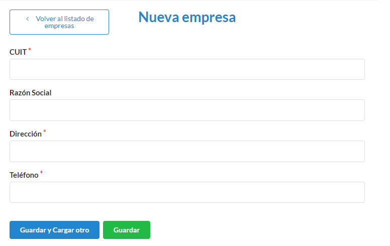
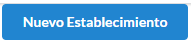

Solicitante¶
Comó crear una nueva persona¶
Para ingresar una nueva persona debemos ir a Personas
Luego nos dirigimos a Nueva persona
En el formulario debemos completar los campos Nombre, Apellido, Email, Tipo de documento (para este caso, aparecera un desplegable con los tipos vigentes), Numero de documento, Dirección, Telefono, Empresa (en caso de ser una Empresa se debera registrar, para esto debemos ir al + para poder agregarla), Roles (para este caso, aparecera un desplegable con los roles vigentes. Pueden tener mas de 1 rol asignado).Los campos con * son obligatorios. Completados los campos se podra Guardar o Guardar y Cargar otro.

Comó crear una nueva empresa¶
Para ingresar una nueva empresa debemos ir a Empresas

Luego nos dirigimos a Nueva persona

En el formulario debemos completar los campos CUIT, Razon social, Direccion, Telefono .Los campos con * son obligatorios. Completados los campos se podra Guardar o Guardar y Cargar otro.
Comó crear un nuevo establecimiento¶
Para ingresar un nuevo establecimiento debemos ir a Establecimientos

Luego nos dirigimos a Nuevo Establecimiento
En el formulario debemos completar los campos Dueño (Debera ser una persona previamente cargada en el sistema), Codgio catastral, Superficie, Nombre, Descripcion .Los campos con * son obligatorios. Completados los campos se podra Guardar o Guardar y Cargar otro.